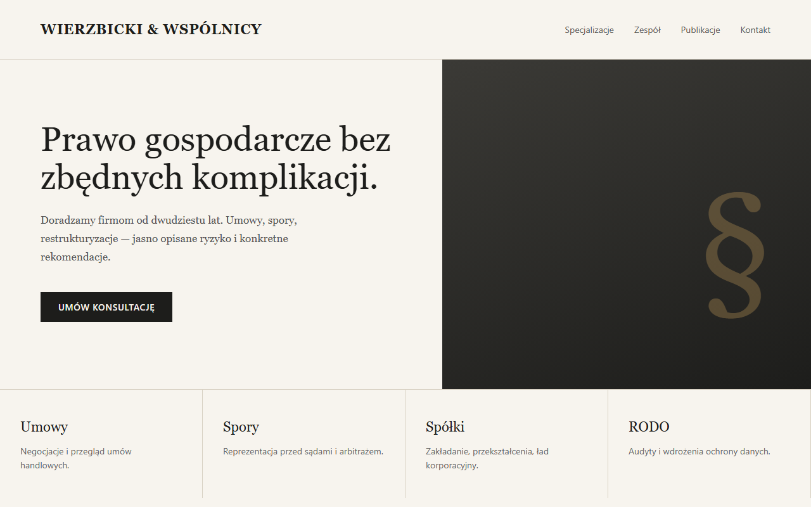
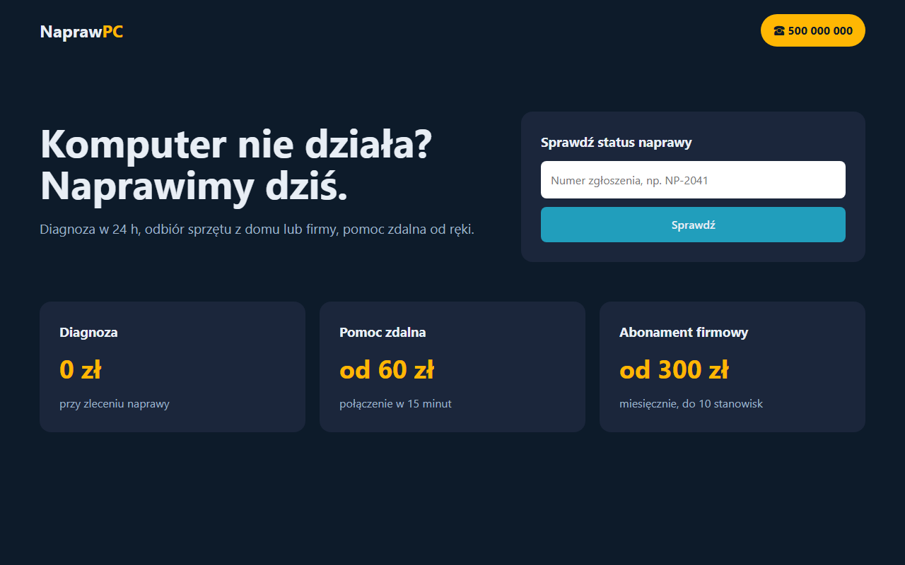
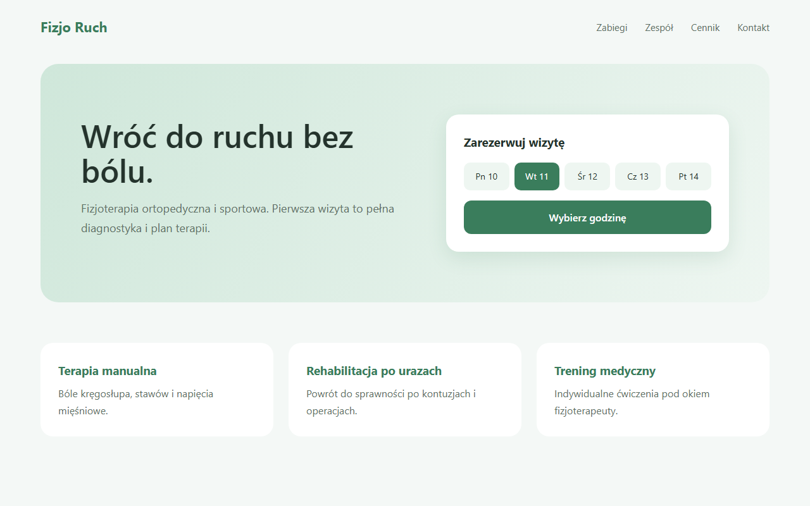
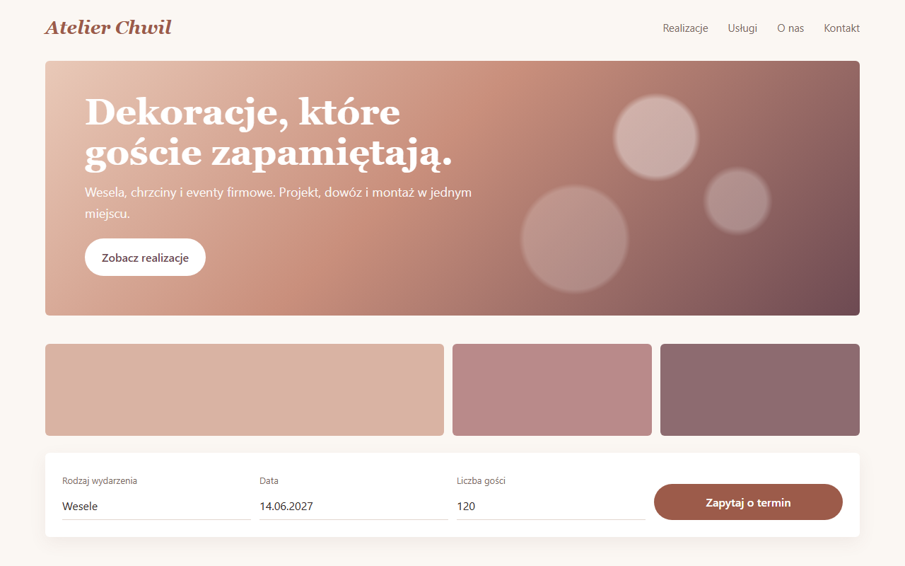
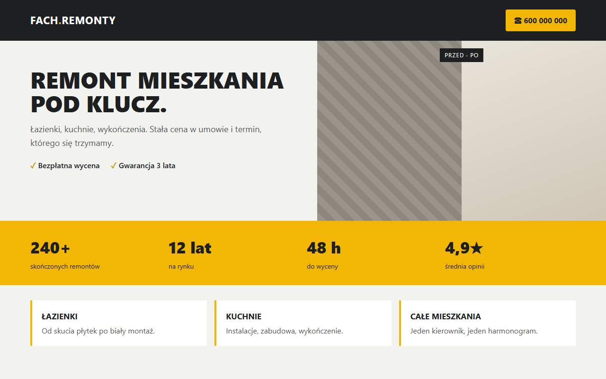

Administracja i wsparcie zdalne, bezpieczeństwo poczty, automatyzacja procesów oraz sztuczna inteligencja uruchamiana na waszym sprzęcie — dane nie wychodzą z firmy.
Zobacz projektyProjekty stronKomputery, sieć, kopie zapasowe, konta Microsoft 365 / Google. Pomoc zdalna, gdy coś przestaje działać.
WindowssiećbackupSprawdzenie SPF/DKIM/DMARC, analiza podejrzanych wiadomości, anonimizacja dokumentów przed wysłaniem.
NIS2RODOphishingPowtarzalne czynności — raporty, publikacje, przetwarzanie plików — zamienione w skrypty i kolejki, które działają same.
PythonPowerShelln8nModele językowe i rozpoznawanie mowy na waszym komputerze. Bez abonamentu w chmurze i bez wysyłania dokumentów na zewnątrz.
OllamaASR/TTSofflineAplikacja Windows, która offline zaczernia dane osobowe w plikach PDF — PESEL, adresy, numery kont — zanim dokument trafi dalej.
PythonPySide6OCRMSIX271 testówMicrosoft Store — wkrótce
Analiza podejrzanej wiadomości e-mail: nagłówki, SPF/DKIM, ścieżka serwerów, linki i załączniki — z wynikiem zrozumiałym dla nie-informatyka.
Pythonanaliza nagłówkówSupabaseopen sourceGitHub Microsoft Store — wkrótce
System, który z planu tworzy film: tekst, lektor, kontrola jakości mowy, montaż i wgranie na kilka kanałów jednocześnie.
lokalne LLMTTSASR QCFFmpegAPIKażdy film ręcznie: nagranie, montaż, wgranie, opis na każdy kanał osobno.
Kolejka robi wszystko sama; człowiek zatwierdza tylko tekst i gotowy film.
Szafy serwerowe i karta graficzna powstały z dwóch pojedynczych grafik. Model wygenerował lokalny model AI na zwykłej karcie graficznej, ok. 2 minuty na obiekt, bez chmury. Przeciągnij, żeby obrócić; kółko przybliża.
Gaussian splattinglokalne GPUWebGLpodgląd produktu
Przykładowe projekty dla fikcyjnych firm. Kliknij, żeby powiększyć.





30 minut online: co boli i co ma działać.
Konkretny zakres i cena, bez niespodzianek.
Zdalnie, z dokumentacją tego, co zrobione.
Abonament albo pomoc na zgłoszenie.
Stos: Python, PowerShell, Windows / MSIX, Ollama, Supabase, n8n, Git, FFmpeg.